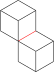
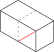
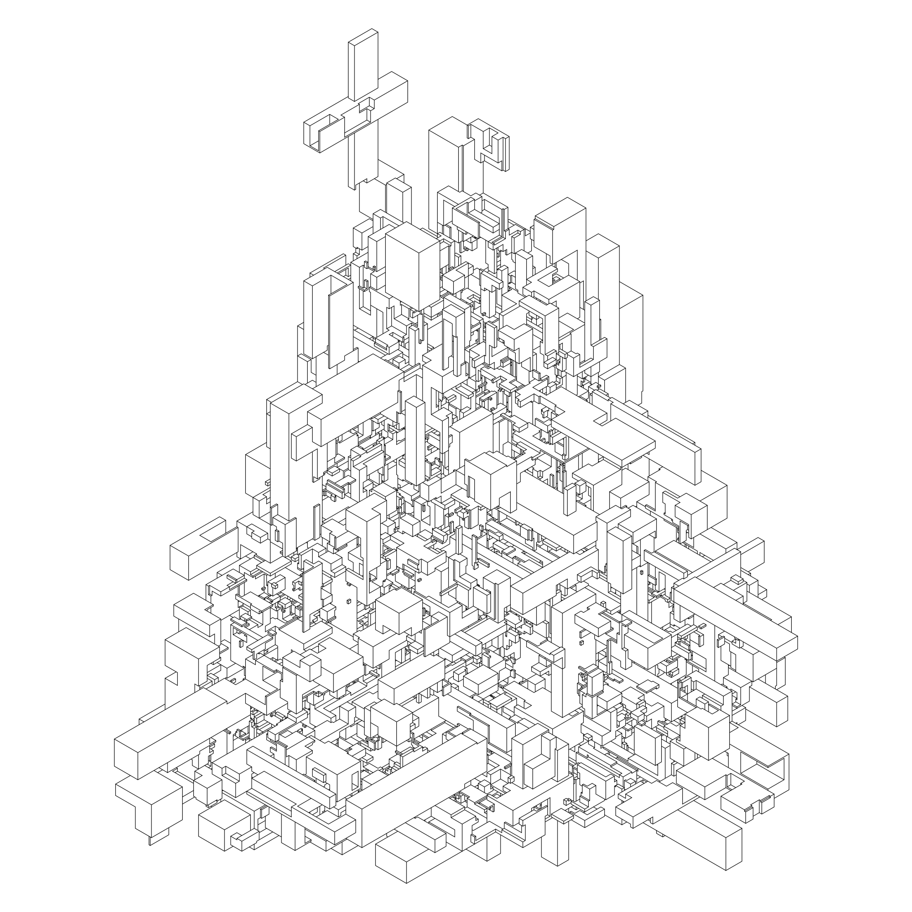
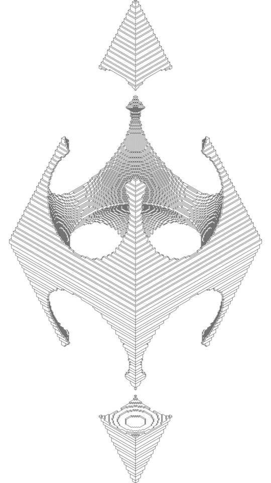

It’s been a long time since my last post, but I didn’t stop doing things. This time I want to talk about ivo, my isometric voxel renderer.
I’ve always been inspired by @wblut’s work, it’s a great combination between coding skills and art. In particular, his isometric pieces are absolutely stunning, intricate and coherent at the same time. Just check his twitter profile to have an idea of the complexity of his work!
I decided to try and come up with a similar system mainly to understand how it worked. Also, since I recently got a pen plotter (yay!) I wanted the system to produce pen-plotter friendly SVGs.
The system
The system at its core is just a collection of voxels that can be turned on and off programmatically, perform hidden line removal and ultimately save the set of visible lines onto the SVG. Since I’m using the system mostly to plot the SVGs I’m not interested in doing some cool shading and fills, I just wanted the visible outlines of the voxels.
I could have tried to use some framework of some sort because voxel renderers are quite common and useful, but I didn’t find one capable of doing hidden line removal and outputting SVGs. Hence, I decided to build everything from scratch. At the end of the day, how hard can it be to take a set of voxels, project them always in the same way and understand which lines are visible and which are not, right?
Turns out it took me quite some time, more that I’d like to admit. This is the main reason I’m writing this post, maybe someone someday will find this useful and hopefully avoid a lot of frustration.
The madness of hidden line removal
The first thing to notice is that with an isometric projection only three faces can be visible. This simplifies things a bit because the renderer has to keep track of those three faces only and can cut corners if need be. I chose to keep track of the front, top and right faces, but the choice is completely arbitrary.
At this point comes the hardest part of the project, that is understanding which edges of the faces are visible and which are not because if two (or more) voxels are adjacent then some edges may be invisible. Here are a couple of examples where the dashed edges are actually invisible and must be hidden.
At the time, this didn’t feel like a huge problem. I was dead wrong. I got stuck on this for weeks and lost the few bits of sanity left in me. My initial approach was to draw an edge of a face if it wasn’t shared by any other voxel. This seemed pretty reasonable to me, but there were a lot of subtle details that make this approach quite annoying to implement.
First of all, it’s actually not true that if an edge is shared between voxels it’s invisible! Here’s an example of this case

Here the edge in red is shared between the two voxels, but it’s not invisible at all!
But okay, here the problem is that the voxels are not adjacent (e.g. they do not touch), just make sure that at least two voxels are adjacent before hiding an edge, right? That works, but unfortunately that’s not the only problem with this approach.
Consider the following scenario

Should the red edge be visible or not? Well, clearly it should be invisible since it’s shared between two adjacent voxels. However, with the current approach it’s considered visible. Why? Because it’s shared between the right face of a voxel and the left face of the other, but left faces are not tracked by the system and the edge is seen as shared by only one voxel, hence visible!
This was really frustrating to me because it means that I had to still keep track of the invisible faces only to check if an edge is visible or not. I was starting to think that there must have been a better approach to all of this, but I implemented the changes anyway just to see where this was going.
And it was at this point that I hit the wall that led me to rewrite all of this insanity. Consider the following example
See how the front and right faces of the voxel in the back get clipped into triangles given that there’s a voxel in front of them? Well, I didn’t even think about that because I was so frustrated and annoyed. At this point I didn’t really want to touch that pile of messy code anymore and I started think about a more elegant solution.
Luckily, I was able to find a good enough solution. The idea is to triangulate each visible face into two triangles with the edge shared between the triangles marked as invisible.
Using triangles makes the clipping problem quite easy to solve because a triangle is not occluded and the other one is, no need to clip anything!
Also, determining whether an edge is invisible or not is not more difficult than doing so with the quadrilateral faces and I’d argue it’s even simpler because less cases have to be considered for a triangle.
It took me some time to write down all the visibility rules, but it was not difficult, just tedious work. Eventually though it worked almost from the get-go! Saying I was ecstatic would be an understatement.
Render order
Okay, now that the edge visibility problem has been solved it’s time to start rendering these edges.
The approach I took is to render each voxel from closest to farthest making sure no triangles in the isometric space are drawn twice. Note that the state of the edges doesn’t matter because if the triangle was already drawn it means there’s a voxel that’s closer to the eye that hides whatever edges are in the farthest voxel.
To do so there should be a “nearness” value for each voxel that’s bigger when the voxel is closer to the eye. I’m quite sure there are quite a few different approaches and formulas here, the one I went with is
pub fn nearness((x, y, z): Voxel) -> i64 {
x + y + z
}
Another way to think about this function is simply the distance between the origin and the voxel, the bigger the distance the closer the voxel. Note that there’s no need to do the correct calculation, but the Manhattan distance can be used instead because voxels with the same nearness value end up being in different positions in the isometric space.
3D to 2D projection
Finally, the last bit I had to figure out is how to project the 3D points into the 2D isometric plane.
The way I do it is to first project the 3D point into a regular 2D orthogonal space by removing the z component. At this point, the point in the 2D orthogonal plane must be projected into the final isometric space. This space is actually just a grid of hexagons which means it’s made by two axis at 30°. Hence, the orthogonal coordinates just have to “follow” these new axes.
Here’s the projection code in Rust
fn project((x, y, z): Voxel) -> (f64,f64) {
// i and j are the coordinates in an orthogonal plane
let i = f64::from(x - z);
let j = f64::from(y - z);
// transform the orthogonal plane into the isometric one
let (dy, dx) = f64::sin_cos(f64::to_radians(30.0));
(i * dx - j * dx, i * dy + j * dy)
}
Conclusions
I had a lot of fun working on this project and I’m quite proud of it even though it was really frustrating from times to times. Especially at the beginning when I wasn’t sure if what I was looking at was correct or just optical illusions.
Anyway, here are some images from various sketches that use this framework. Until next time.
 